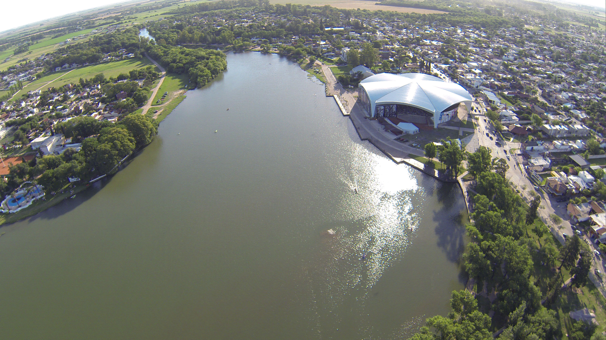

Villa Maria
¿Qué te espera en Villa María?


Naturaleza deslumbrante: Sumérgete en la belleza de nuestros parques y reservas naturales. El
Parque Costanera, a orillas del río Ctalamochita, es perfecto para pasear, hacer picnics y disfrutar
de hermosas vistas.
Gastronomía deliciosa: Villa María es conocida por su exquisita gastronomía. Prueba las
delicias locales en los restaurantes y bares de la ciudad. ¡No te pierdas el tradicional asado
argentino!
Cultura y arte: Explora nuestra rica escena cultural. Visita el Teatro Colón, que alberga
espectáculos de alta calidad durante todo el año, y descubre el Museo Municipal Florentino Ameghino
para conocer la historia de la región.
¿Estás listo para vivir una experiencia inolvidable en Villa María? Ven y descubre todo lo que
nuestra ciudad tiene para ofrecer. Te garantizamos que te enamorarás de su belleza, cultura y
gente.
Ingresa acá para ver las opciones a de alojamiento que tenemos para
ofrecerte!